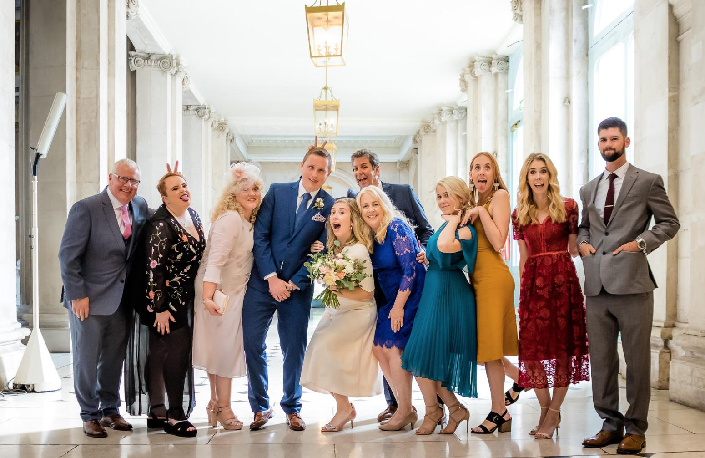
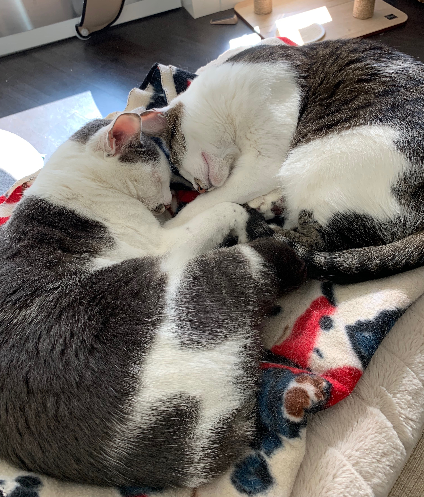

Greetings! Thank you for visiting my first portfolio page. My name is Kate Kelly and I am in the part-time course at Epicodus. This entire coding experience has all been very new to me, however with each passing day I learn so many new and interesting things that any fears I had in the beginning of this course have turned into only excitment and joy! If you have any questions for me after reviewing my work shared below, feel free to email me here!
You might ask why someone who has zero experience with coding would want to start a coding course? Well, my career thus far has been mainly hospitality based. I have been so fortunate to work in beautiful hotels, social clubs, and most recently, an incredible new corporate office in the Pearl District of Portland. With that said, after 10 years in the hospitality industry I was ready for a change. At my current job I work with hundreds of software engineers and many Product Managers that have been a huge inspiration to me during this journey. Also, not only is the demand for software engineers incredibly high, as a woman I am hopeful that my experiences will encourage other women to dive into the male-dominated software engineering world and create more diversity.
There are a few things I love most in this world, the first being my family. In the picture below you will see my immediate family to the right and my husband's family to the left. This picture was taken last year at our wedding in Dublin, Ireland, which is where my husband is from.
The other loves of my life are my cats, Quin and Abbey. Supposedly they are sisters that were rescued in the Portland area. We adopted them in February of 2017 (on Valenines Day!) and they bring my husband and I so much joy. Not to mention, cats are incredibly easy to take care of which works well for our lifestyle.
